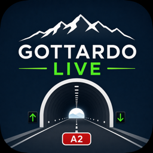

Gottardo Live
Support · Real-time traffic, queues, official alerts and webcams for the Gotthard road tunnel.
Supporto · Traffico in tempo reale, code, avvisi ufficiali e webcam per il tunnel del San Gottardo.
Support · Echtzeit-Verkehr, Staus, offizielle Meldungen und Webcams für den Gotthard-Strassentunnel.
Assistance · Trafic en temps réel, files, alertes officielles et webcams pour le tunnel routier du Gothard.
Contact
Questions, problems or suggestions? Write to us — we usually reply within a couple of days.
Email supportFrequently asked questions
The app shows “Clear” and 0 minutes — is it broken?
No: it means there is currently no queue at the tunnel. Queues at the Gotthard typically build on weekends, holidays and summer travel days. The 24-hour chart shows how the day evolved.
Why are the official alerts in Italian, German or French?
The alerts are published by the Swiss traffic management centre (VMZ-CH) in the three national languages only — an English version does not exist at the source. The app picks the language that best matches your device; the interface itself is fully localised in English, Italian, German and French.
A webcam shows “out of service”
That placeholder image comes from the road authority (FEDRO/AFBN) when a camera is temporarily down. It usually returns within a few days; nothing needs fixing on your side.
How are waiting times calculated?
When the authorities publish an official waiting time, we show that. When they publish only the queue length, we estimate roughly 10 minutes per kilometre (the typical Gotthard metering rate). When there is no official queue, Apple Maps may show a discreet “heavier traffic than usual” hint — this is only an indication, not a queue, and has no kilometres.
Can I control the ads I see?
Yes. In the EEA, the UK and Switzerland the app asks for your consent before any ad is requested, and iOS asks separately whether the app may track you. If you decline either, the app works exactly the same — the ads are simply not personalised. Change your consent in Settings → “Privacy options”, and tracking in iOS Settings → Privacy & Security → Tracking.
I don't receive notifications
Check iOS Settings → Notifications → Gottardo Live and make sure notifications are allowed. Notifications are optional and used only for significant traffic updates.
Can I see the intro tour again?
Yes: in the app open Settings (gear icon) → About → “Replay the tour”.
I changed phone and the ads are back
The app has no user account, so a purchase follows your Apple Account, not the device. Open Settings → Purchases → “Restore purchases” while signed in with the same Apple Account you bought it with, and the ads go away again. It costs nothing.
How do I cancel the monthly subscription?
In the app: Settings → Purchases → “Manage subscription”. Or in iOS Settings → tap your name → Subscriptions. Cancel at least 24 hours before the period ends, otherwise it renews once more. The one-off “for ever” purchase has nothing to cancel: it never renews.
Advertising
The app is free and supported by a single banner ad from Google AdMob, placed between the two direction cards. Every feature is available to everyone — nothing in the app is behind a purchase.
If you would rather not see the banner, you can remove it: a monthly subscription (auto-renewing, CHF 1.00 / €0.99 / £0.99) or a single payment that lasts for ever (CHF 10.00 / €9.99 / £9.99). Both do exactly the same thing — they hide the advert. In the app: Settings → Purchases.
Before any ad is requested, the app asks for your consent (EEA, UK and Switzerland) and for tracking permission through Apple's App Tracking Transparency prompt. Declining either changes nothing except that the ads you see are not personalised.
See our Privacy Policy.
Data sources
- Traffic data and alerts: Swiss Federal Roads Office (FEDRO / VMZ-CH) via opentransportdata.swiss
- Travel times: Apple Maps · Weather: Apple Weather / Open-Meteo
- Webcams: FEDRO / AFBN
- Advertising: Google AdMob (free version)
Queue information is provided by the authorities and may occasionally differ from actual conditions. Please never use the app while driving.
Contatti
Domande, problemi o suggerimenti? Scrivici — di solito rispondiamo entro un paio di giorni.
Scrivici via emailDomande frequenti
L'app mostra “Clear” e 0 minuti — è rotta?
No: significa che al momento non c'è coda al tunnel. Le code al Gottardo si formano tipicamente nei weekend, nei giorni festivi e nei periodi di traffico estivo. Il grafico delle 24 ore mostra com'è andata la giornata.
Perché gli avvisi ufficiali sono in italiano, tedesco o francese?
Gli avvisi sono pubblicati dalla centrale svizzera del traffico (VMZ-CH) solo nelle tre lingue nazionali — una versione inglese non esiste alla fonte. L'app sceglie la lingua più vicina alle impostazioni del dispositivo; l'interfaccia è comunque completamente localizzata in inglese, italiano, tedesco e francese.
Una webcam mostra “fuori servizio”
Quell'immagine segnaposto arriva dall'ente stradale (USTRA/AFBN) quando una telecamera è temporaneamente fuori uso. Di solito torna nel giro di qualche giorno; non c'è nulla da sistemare da parte tua.
Come vengono calcolati i tempi d'attesa?
Quando le autorità pubblicano un tempo d'attesa ufficiale, mostriamo quello. Quando pubblicano solo la lunghezza della coda, stimiamo circa 10 minuti al chilometro (il ritmo tipico del dosaggio del Gottardo). Quando non c'è coda ufficiale, Apple Maps può mostrare un discreto indizio “traffico più lento del solito” — è solo un'indicazione, non una coda, e non ha chilometri.
Posso decidere quali pubblicità vedo?
Sì. Nel SEE, nel Regno Unito e in Svizzera l'app chiede il tuo consenso prima di qualsiasi richiesta di annuncio, e iOS ti chiede a parte se l'app può tracciarti. Se rifiuti, l'app funziona esattamente allo stesso modo: gli annunci semplicemente non sono personalizzati. Puoi cambiare il consenso in Impostazioni → “Opzioni privacy” e il tracciamento in Impostazioni iOS → Privacy e sicurezza → Tracciamento.
Non ricevo le notifiche
Controlla in Impostazioni iOS → Notifiche → Gottardo Live che le notifiche siano consentite. Le notifiche sono facoltative e usate solo per aggiornamenti importanti sul traffico.
Posso rivedere il tour iniziale?
Sì: nell'app apri Impostazioni (icona ingranaggio) → Info → “Rivedi il tour”.
Ho cambiato telefono e la pubblicità è tornata
L'app non ha account utente, quindi l'acquisto segue il tuo account Apple, non il dispositivo. Apri Impostazioni → Acquisti → “Ripristina gli acquisti” con lo stesso account Apple usato per comprare, e la pubblicità sparisce di nuovo. Non costa nulla.
Come disdico l'abbonamento mensile?
Nell'app: Impostazioni → Acquisti → “Gestisci abbonamento”. Oppure in Impostazioni di iOS → tocca il tuo nome → Abbonamenti. Disdici almeno 24 ore prima della fine del periodo, altrimenti si rinnova un'altra volta. L'acquisto “per sempre” non ha nulla da disdire: non si rinnova mai.
Pubblicità
L'app è gratuita ed è sostenuta da un solo banner di Google AdMob, collocato tra le due schede direzione. Tutte le funzioni sono disponibili per tutti: niente, nell'app, sta dietro a un acquisto.
Se preferisci non vedere il banner, puoi toglierlo: un abbonamento mensile (con rinnovo automatico, CHF 1.00 / 0,99 €) oppure un pagamento unico che vale per sempre (CHF 10.00 / 9,99 €). Fanno esattamente la stessa cosa — nascondono la pubblicità. Nell'app: Impostazioni → Acquisti.
Prima di qualsiasi richiesta di annuncio l'app chiede il tuo consenso (SEE, Regno Unito e Svizzera) e il permesso di tracciamento tramite il dialogo App Tracking Transparency di Apple. Rifiutare non cambia nulla, se non che gli annunci che vedi non sono personalizzati.
Consulta la nostra Informativa sulla privacy.
Fonti dei dati
- Dati e avvisi sul traffico: Ufficio federale delle strade (USTRA / VMZ-CH) tramite opentransportdata.swiss
- Tempi di percorrenza: Apple Maps · Meteo: Apple Weather / Open-Meteo
- Webcam: USTRA / AFBN
- Pubblicità: Google AdMob (versione gratuita)
Le informazioni sulle code sono fornite dalle autorità e possono a volte differire dalle condizioni reali. Non usare mai l'app mentre guidi.
Kontakt
Fragen, Probleme oder Vorschläge? Schreibe uns — wir antworten meist innerhalb weniger Tage.
Per E-Mail schreibenHäufige Fragen
Die App zeigt „Clear“ und 0 Minuten — ist sie kaputt?
Nein: Es bedeutet, dass gerade kein Stau am Tunnel ist. Staus am Gotthard bilden sich typischerweise an Wochenenden, Feiertagen und in der Sommerreisezeit. Das 24-Stunden-Diagramm zeigt den Tagesverlauf.
Warum sind die offiziellen Meldungen auf Italienisch, Deutsch oder Französisch?
Die Meldungen werden von der Schweizer Verkehrsmanagementzentrale (VMZ-CH) nur in den drei Landessprachen veröffentlicht — eine englische Version gibt es an der Quelle nicht. Die App wählt die Sprache, die am besten zu deinen Geräteeinstellungen passt; die Oberfläche selbst ist vollständig auf Englisch, Italienisch, Deutsch und Französisch lokalisiert.
Eine Webcam zeigt „ausser Betrieb“
Dieses Platzhalterbild stammt von der Strassenbehörde (ASTRA/AFBN), wenn eine Kamera vorübergehend ausfällt. Sie ist meist nach wenigen Tagen wieder da; auf deiner Seite ist nichts zu tun.
Wie werden die Wartezeiten berechnet?
Wenn die Behörden eine offizielle Wartezeit veröffentlichen, zeigen wir diese. Veröffentlichen sie nur die Staulänge, schätzen wir rund 10 Minuten pro Kilometer (die typische Dosierrate am Gotthard). Ohne offiziellen Stau kann Apple Karten einen dezenten Hinweis „mehr Verkehr als üblich“ anzeigen — das ist nur ein Hinweis, kein Stau, und hat keine Kilometerangabe.
Kann ich beeinflussen, welche Werbung ich sehe?
Ja. Im EWR, im Vereinigten Königreich und in der Schweiz fragt die App vor jeder Anzeigenanforderung nach deiner Einwilligung, und iOS fragt separat, ob die App dich tracken darf. Lehnst du ab, funktioniert die App genau gleich – die Anzeigen sind dann einfach nicht personalisiert. Die Einwilligung änderst du unter Einstellungen → „Datenschutzoptionen“, das Tracking in den iOS-Einstellungen → Datenschutz & Sicherheit → Tracking.
Ich erhalte keine Benachrichtigungen
Prüfe in den iOS-Einstellungen → Mitteilungen → Gottardo Live, ob Mitteilungen erlaubt sind. Benachrichtigungen sind optional und werden nur für wichtige Verkehrsupdates verwendet.
Kann ich die Einführungstour erneut ansehen?
Ja: Öffne in der App die Einstellungen (Zahnrad) → Info → „Tour erneut ansehen“.
Ich habe das Telefon gewechselt und die Werbung ist zurück
Die App hat kein Benutzerkonto, der Kauf hängt also an deinem Apple-Account, nicht am Gerät. Öffne Einstellungen → Käufe → „Käufe wiederherstellen“, angemeldet mit demselben Apple-Account, mit dem du gekauft hast — dann ist die Werbung wieder weg. Das kostet nichts.
Wie kündige ich das Monatsabo?
In der App: Einstellungen → Käufe → „Abo verwalten“. Oder in den iOS-Einstellungen → auf deinen Namen tippen → Abos. Kündige mindestens 24 Stunden vor Ende des Zeitraums, sonst verlängert es sich noch einmal. Beim einmaligen Kauf „für immer“ gibt es nichts zu kündigen: Er verlängert sich nie.
Werbung
Die App ist kostenlos und wird durch ein einzelnes Werbebanner von Google AdMob zwischen den beiden Richtungskarten finanziert. Alle Funktionen stehen allen zur Verfügung — nichts in der App steht hinter einem Kauf.
Wenn du das Banner lieber nicht sehen möchtest, kannst du es entfernen: ein Monatsabo (mit automatischer Verlängerung, CHF 1.00 / 0,99 €) oder eine einmalige Zahlung, die für immer gilt (CHF 10.00 / 9,99 €). Beide bewirken genau dasselbe — sie blenden die Werbung aus. In der App: Einstellungen → Käufe.
Vor jeder Anzeigenanforderung fragt die App nach deiner Einwilligung (EWR, UK und Schweiz) und über Apples App-Tracking-Transparency-Dialog nach der Tracking-Erlaubnis. Eine Ablehnung ändert nichts, ausser dass die angezeigte Werbung nicht personalisiert ist.
Siehe unsere Datenschutzrichtlinie.
Datenquellen
- Verkehrsdaten und Meldungen: Bundesamt für Strassen (ASTRA / VMZ-CH) über opentransportdata.swiss
- Fahrzeiten: Apple Karten · Wetter: Apple Weather / Open-Meteo
- Webcams: ASTRA / AFBN
- Werbung: Google AdMob (kostenlose Version)
Die Stauinformationen stammen von den Behörden und können gelegentlich von den tatsächlichen Bedingungen abweichen. Bitte nutze die App nie während der Fahrt.
Contact
Questions, problèmes ou suggestions ? Écrivez-nous — nous répondons généralement en quelques jours.
Nous écrire par e-mailQuestions fréquentes
L'app affiche « Clear » et 0 minute — est-elle en panne ?
Non : cela signifie qu'il n'y a pas de file au tunnel pour le moment. Les files au Gothard se forment généralement les week-ends, les jours fériés et pendant les départs estivaux. Le graphique sur 24 heures montre l'évolution de la journée.
Pourquoi les alertes officielles sont-elles en italien, allemand ou français ?
Les alertes sont publiées par la centrale suisse de gestion du trafic (VMZ-CH) uniquement dans les trois langues nationales — il n'existe pas de version anglaise à la source. L'app choisit la langue la plus proche des réglages de votre appareil ; l'interface est entièrement localisée en anglais, italien, allemand et français.
Une webcam affiche « hors service »
Cette image de remplacement provient de l'autorité routière (OFROU/AFBN) lorsqu'une caméra est temporairement indisponible. Elle revient généralement en quelques jours ; rien à corriger de votre côté.
Comment les temps d'attente sont-ils calculés ?
Lorsque les autorités publient un temps d'attente officiel, nous l'affichons. Lorsqu'elles ne publient que la longueur de la file, nous estimons environ 10 minutes par kilomètre (le débit de dosage typique du Gothard). En l'absence de file officielle, Plans (Apple) peut afficher une indication discrète « trafic plus dense que d'habitude » — ce n'est qu'une indication, pas une file, et sans kilomètres.
Puis-je choisir les publicités que je vois ?
Oui. Dans l'EEE, au Royaume-Uni et en Suisse, l'app demande votre consentement avant toute demande d'annonce, et iOS demande séparément si l'app peut vous suivre. En cas de refus, l'app fonctionne exactement pareil : les annonces ne sont simplement pas personnalisées. Modifiez le consentement dans Réglages → « Options de confidentialité », et le suivi dans Réglages iOS → Confidentialité et sécurité → Suivi.
Je ne reçois pas les notifications
Vérifiez dans Réglages iOS → Notifications → Gottardo Live que les notifications sont autorisées. Les notifications sont facultatives et servent uniquement aux mises à jour importantes du trafic.
Puis-je revoir le tour d'introduction ?
Oui : dans l'app, ouvrez Réglages (icône engrenage) → À propos → « Revoir le tour ».
J'ai changé de téléphone et la publicité est revenue
L'app n'a pas de compte utilisateur : l'achat suit votre compte Apple, pas l'appareil. Ouvrez Réglages → Achats → « Restaurer les achats » avec le compte Apple utilisé pour l'achat, et la publicité disparaît de nouveau. C'est gratuit.
Comment résilier l'abonnement mensuel ?
Dans l'app : Réglages → Achats → « Gérer l'abonnement ». Ou dans Réglages iOS → touchez votre nom → Abonnements. Résiliez au moins 24 heures avant la fin de la période, sinon elle se renouvelle une fois de plus. L'achat unique « pour toujours » n'a rien à résilier : il ne se renouvelle jamais.
Publicité
L'app est gratuite et financée par une seule bannière Google AdMob, placée entre les deux cartes de direction. Toutes les fonctions sont accessibles à tous : rien, dans l'app, n'est derrière un achat.
Si vous préférez ne pas voir la bannière, vous pouvez la retirer : un abonnement mensuel (à renouvellement automatique, CHF 1.00 / 0,99 €) ou un paiement unique valable pour toujours (CHF 10.00 / 9,99 €). Les deux font exactement la même chose — ils masquent la publicité. Dans l'app : Réglages → Achats.
Avant toute demande d'annonce, l'app demande votre consentement (EEE, Royaume-Uni et Suisse) et l'autorisation de suivi via l'invite App Tracking Transparency d'Apple. Un refus ne change rien, si ce n'est que les annonces affichées ne sont pas personnalisées.
Consultez notre Politique de confidentialité.
Sources des données
- Données et alertes de trafic : Office fédéral des routes (OFROU / VMZ-CH) via opentransportdata.swiss
- Temps de trajet : Plans (Apple) · Météo : Apple Weather / Open-Meteo
- Webcams : OFROU / AFBN
- Publicité : Google AdMob (version gratuite)
Les informations sur les files sont fournies par les autorités et peuvent parfois différer des conditions réelles. N'utilisez jamais l'app en conduisant.